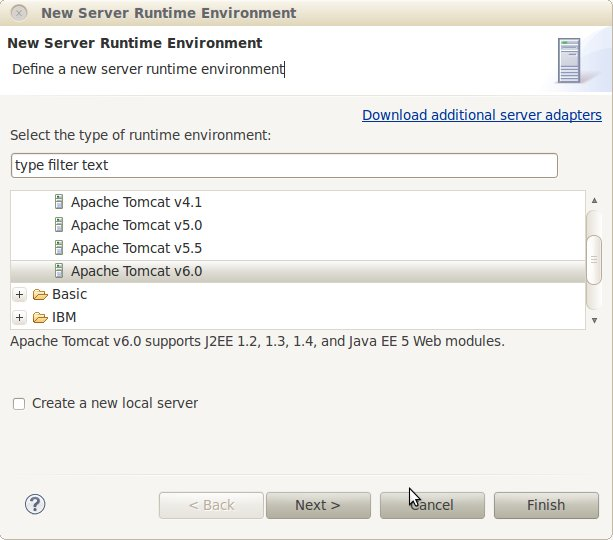
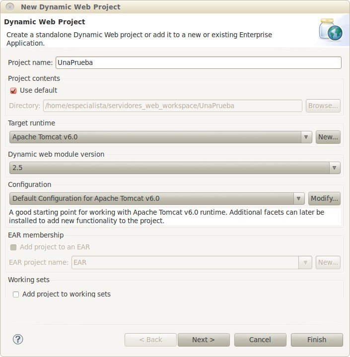
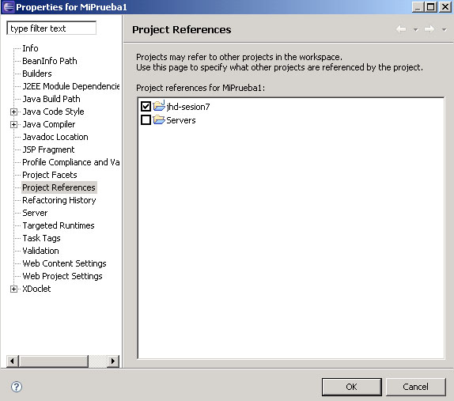
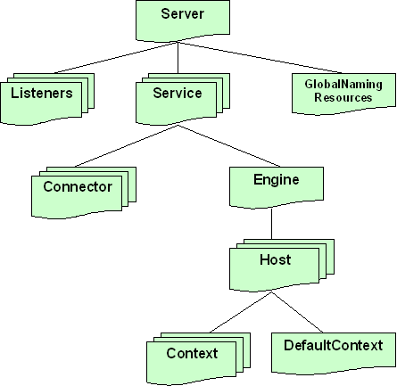

Configuración de Aplicaciones Web en Tomcat. Desarrollo con Eclipse WTP
En esta sesión veremos primero cómo es el ciclo de desarrollo de aplicaciones web con Eclipse WTP, que es el conjunto de plugins para desarrollar aplicaciones web que es "estándar" de Eclipse. Luego veremos cómo configurar Apache Tomcat para ejecutar nuestras aplicaciones. Una vez configuradas las características comunes a todas las aplicaciones veremos cómo configurar los aspectos propios de cada aplicación. De éstos hay algunos que son estándares e independientes del servidor, pero hay otros particulares a Tomcat.
Desarrollo y despliegue con WebTools
WebTools es un plugin ya integrado con Eclipse, que permite gestionar aplicaciones web como proyectos, teniéndolo todo integrado y a mano para poder empaquetar, probar y desplegar la aplicación de forma cómoda. Para ello, desde WebTools podremos, entre otras cosas:
- Gestionar el servidor web sobre el que queremos desplegar y/o probar la aplicación, pudiendo editar su configuración, y pararlo y reanudarlo cuando lo necesitemos, desde el propio Eclipse
- Crear y desarrollar las aplicaciones web que vayamos a desplegar. Para cada una, Eclipse nos organizará los ficheros según la estructura que digamos (carpeta de fuentes Java, carpeta WEB-INF, librerías, etc)
- Desplegar y testear las aplicaciones sobre el servidor tantas veces como queramos, manteniendo siempre el control sobre su ejecución desde Eclipse
Para trabajar con este tipo de elementos, trabajaremos desde la perspectiva Java EE de Eclipse. Veremos cómo realizar estas tareas a continuación.
Gestión de servidores web con WebTools
En WTP hay que dar de alta tanto el "Server runtime" que es como el tipo genérico de servidor que vamos a usar como el "Server", que es una instancia concreta de ese runtime. Podemos tener varias instancias del mismo runtime.
Para dar de alta en Eclipse el servidor web sobre el que queremos trabajar, vamos a Window - Show View - Servers, para abrir la vista de Servidores, y después, pinchando sobre ella con el botón derecho, vamos a New - Server. Podemos llegar igualmente desde el menú File > New > Server. Después, en la ventana que aparece, simplemente rellenamos los datos del nombre del host (por defecto, localhost), y el tipo de servidor web que usamos. Si no hemos dado de alta ningún runtime, podemos hacerlo ahora. En el caso de tomcat se nos pedirá el directorio de instalación, entre otros datos.

Después, en la vista Servers (Show > View > Servers) ya tendremos añadido el nuevo servidor. Haciendo click con el botón derecho sobre él, accedemos a las opciones para pararlo, reanudarlo, asociarle aplicaciones, etc
Creación y desarrollo de una aplicación web con WebTools
Para crear un proyecto de aplicación web desde WebTools, vamos al menú File - New - Project... - Web - Dynamic Web Project

En los siguientes pasos del asistente podemos elegir su configuración, y las carpetas donde alojar contenido web y fuentes Java. La estructura de carpetas que crea WTP será la siguiente:
- Carpeta src: carpeta de fuentes, con todas las clases Java y paquetes que hagamos para nuestra aplicación (clases auxiliares, servlets, etc)
- Carpeta build, donde se colocará el código compilado.
-
Carpeta WebContent: con la estructura de la aplicación web. Como ya vimos en la sesión anterior esta estructura es estándar. En su carpeta raíz podremos colocar las páginas HTML / JSP (organizadas en subcarpetas si queremos)
- Subcarpeta WebContent/WEB-INF: con el fichero descriptor de la aplicación (web.xml)
- Subcarpeta WebContent/WEB-INF/lib: con las librerías JAR que necesite nuestra aplicación
- Subcarpeta WebContent/WEB-INF/classes: inicialmente vacía, en ella se copiarán después automáticamente los ficheros fuente de src
- Además verás una subcarpeta WebContent/META-INF que es propia de Tomcat, y no encontrarás en otros proyectos web que vayas a desplegar en otros servidores. Luego veremos qué se puede configurar en dicha carpeta.
Interdependencias entre proyectos
En ocasiones deberemos relacionar algún proyecto de clases Java que tengamos hecho, con un nuevo proyecto web que vayamos a hacer, para poder utilizar e incorporar las clases del proyecto Java en nuestro proyecto web. Para ello, vamos con el botón derecho del ratón sobre el proyecto, y vamos a sus Properties. En ellas, vamos a Project References, y marcamos con el ratón los proyectos que queramos asociar al actual:

Despliegue de aplicaciones web con WebTools
Una vez tengamos la aplicación web lista para probar en el servidor web, tenemos dos alternativas para desplegarla y probarla:
- Utilizar las facilidades de despliegue sobre el servidor que ofrece WebTools. Esta opción la utilizaremos en fase de desarrollo y depuración, para probar de forma cómoda y rápida los cambios que vayamos haciendo sobre nuestra aplicación.
- Usar alguna herramienta adicional como Ant o Maven, como veremos en sesiones posteriores. Esto será necesario cuando el servidor sea remoto
Para poder desplegar la aplicación utilizando WebTools, simplemente tenemos que pinchar con el botón derecho sobre el proyecto web y elegir la opción Run As - Run on Server. Inicialmente, ya le hemos asignado el servidor al proyecto, cuando lo creamos, así que WebTools ya sabe sobre qué servidor desplegar los cambios.
Configuración de Tomcat
Para comprender mejor la configuración de Tomcat antes hay que ver cuál es su arquitectura, tanto desde el punto de vista lógico como físico.
Estructura física y lógica de Tomcat
Estructura física
La distribución de Tomcat está dividida en los siguientes directorios:
- bin: ejecutables y scripts para arrancar y parar Tomcat.
- common: clases y librerías compartidas entre Tomcat y las aplicaciones web. Las clases se deben colocar en common/classes, mientras que las librerías en formato JAR se deben poner en common/lib.
- conf: ficheros de configuración.
- logs: directorio donde se guardan por defecto los logs.
- server: las clases que componen Tomcat.
- shared: clases compartidas por todas las aplicaciones web.
- webapps: directorio usado por defecto como raíz donde se colocan todas las aplicaciones web.
- work y temp: directorios para almacenar información temporal
Los logs del servidor
Además del log de accesos, en Tomcat podemos tener otros ficheros de log cuya finalidad primordial es registrar eventos del servidor y de las aplicaciones para poder realizar una depuración en caso de que se produzca algún error.
Estos ficheros se encuentran dentro de la carpeta logs. Algunos ya vienen por defecto. Dependiendo de la versión de Tomcat, podemos encontrarnos uno o varios de los siguientes:
- catalina.aaaa-mm-dd.log: logger global definido al nivel del engine.
- localhost.aaaa-mm-dd.log: logger global a todas las aplicaciones del host localhost.
- manager.aaaa-mm-dd.log: logger que utiliza el manager de Tomcat.
- admin.aaaa-mm-dd.log: logger que utiliza la aplicación de administración.
En estos ficheros podremos encontrar mensajes sobre el funcionamiento general y errores generales del servidor Tomcat.
Estructura lógica: módulos
Tomcat está compuesto por una serie de módulos cuyo comportamiento es altamente configurable. Incluso se pueden cambiar las clases que utiliza Tomcat por clases propias modificando el fichero server.xml. La estructura general de dichos módulos se muestra en la siguiente figura.

Cada módulo viene representado por su correspondiente etiqueta en el fichero server.xml.
- Server: es el propio Tomcat. Solo existe una instancia de este componente, que a su vez contiene a todos los demás elementos y subelementos.
- Listener: monitoriza la creación y eliminación de contenedores web
- GlobalNamingResources: sirve para definir mapeados de JNDI globales a todas las aplicaciones. Por ejemplo, para definir métodos de conexión a bases de datos.
- Service: un objeto de este tipo representa el sistema formado por un conjunto de conectores (connector) que reciben las peticiones de los clientes y las pasan a un engine, que las procesa. Por defecto viene definido el servicio llamado Tomcat-Standalone.
- Connector: acepta ciertos tipos de peticiones para pasarlas al engine. Por defecto, Tomcat incorpora un conector HTTP/1.1 (sin SSL) por el puerto 8080, y otro para comunicación con otros servidores (como Apache). Para cambiar el puerto por el que Tomcat acepta las peticiones HTTP basta con cambiar el atributo port de dicho connector.
- Engine: representa al contenedor web.
- Host: representa un host (o un host virtual). Mediante appBase se especifica el directorio de donde "colgarán" las aplicaciones web (por defecto webapps)
- Context: representa una aplicación web. Veremos de manera más detallada su configuración.
- DefaultContext: se aplica por defecto a aquellas aplicaciones que no tienen context propio.
Hay una serie de elementos que se pueden definir a varios niveles, de modo que por ejemplo pueden afectar a todo el servidor o solo a una aplicación web:
- Valve: es un componente que puede "filtrar" las peticiones.
- Logger: define el funcionamiento de los logs para depuración de errores (no los logs de acceso, que se definen mediante un valve).
- Realm: define un conjunto de usuarios con permisos de acceso a un determinado contexto.
- Manager: implementa el manejo de sesiones HTTP. Se puede configurar para que las sesiones se almacenen de manera permanente cuando se apaga el servidor.
- Loader: cargador de clases para una aplicación web. Es raro usar uno distinto al que viene por defecto.
Formas de cambiar la configuración
La configuración de Tomcat está almacenada en cuatro ficheros que se encuentran en el directorio conf. Tres de ellos están en formato XML y el cuarto es un fichero de políticas de seguridad en el formato estándar de Java:
- server.xml: el fichero principal de configuración.
- web.xml: es un fichero en el formato estándar para aplicaciones web con servlets, que contiene la configuración global a todas las aplicaciones.
- tomcat-users.xml: lista de usuarios y contraseñas para autentificación.
- catalina.policy: políticas de seguridad para la ejecución del servidor.
Además se puede cambiar gran parte de la configuración a través de la aplicación de administración.
Configurar el host
Mediante el elemento Host se define la configuración para un host o host virtual
<Host name="localhost" debug="0" appBase="webapps" u
npackWARs="true" autoDeploy="true">...
Algunos de los principales atributos de este elemento son los siguientes:
| Atributo | Significado | Valor por defecto |
|---|---|---|
| name | nombre del host o host virtual | ninguno |
| debug | nivel de mensajes de depuración | 0 |
| appBase | directorio donde se instalarán las aplicaciones de este host (si es relativa, la ruta se supone con respecto al directorio de Tomcat) | ninguno |
| unpackWARs | si es true, las aplicaciones empaquetadas en WAR se desempaquetan antes de ejecutarse | true |
| autoDeploy | si es true, se utiliza el despliegue automático de aplicaciones | true |
| liveDeploy | si es true, se utiliza despliegue automático sin necesidad de rearrancar Tomcat | true |
El despliegue automático de aplicaciones es una interesante característica que permite instalarlas sin más que dejar el WAR o la estructura de directorios de la aplicación dentro del directorio appBase. Esta característica se puede desactivar poniendo autoDeploy y liveDeploy a false. Veremos más sobre ello en el punto siguiente.
Configuración en Eclipse WebTools
Al ejecutar aplicaciones mediante WebTools, Eclipse está empleando una copia de los ficheros de configuración de Tomcat, de modo que puedan cambiarse sin afectar a la instalación del servidor. Dicha configuración es accesible a través de la carpeta Servers que aparece en Eclipse como si fuera un proyecto más. Por cada runtime de servidor web configurado en Eclipse tendremos una subcarpeta dentro de Servers, en la que aparecerán los ficheros de configuración del servidor que ya hemos visto: server.xml, tomcat-users.xml,.... Aunque no es necesario, ni recomendable salvo que sepamos con seguridad lo que estamos haciendo, podemos modificar manualmente estos archivos si necesitamos una configuración más flexible que la que ofrecen las opciones de WebTools.
Configuración de aplicaciones web en Tomcat
Una vez visto cómo cambiar aspectos comunes a todas las aplicaciones, veamos cómo configurar cada aplicación de modo individual. El mecanismo estándar en aplicaciones web JavaEE es el descriptor de despliegue, aunque Tomcat aporta algo de funcionalidad extra a través del contexto.
El descriptor de despliegue
Como hemos dicho anteriormente, el directorio WEB-INF de una aplicación web con servlets y/o páginas JSP, debe haber un fichero descriptor de despliegue (llamado web.xml) que contenga la información relativa a la aplicación.
El web.xml es estándar en JavaEE y por tanto todo lo visto en esta sección es igualmente aplicable a cualquier servidor compatible JavaEE, aunque no sea Tomcat.
Es un fichero XML, que comienza con una cabecera XML que indica la versión y la codificación de caracteres, y un DOCTYPE que indica el tipo de documento, y la especificación de servlets que se sigue. La etiqueta raíz del documento XML es web-app. Así, un ejemplo de fichero podría ser:
<?xml version="1.0" encoding="UTF-8"?>
<web-app xmlns:xsi="http://www.w3.org/2001/XMLSchema-instance"
xmlns="http://java.sun.com/xml/ns/javaee"
xmlns:web="http://java.sun.com/xml/ns/javaee/web-app_2_5.xsd"
xsi:schemaLocation="http://java.sun.com/xml/ns/javaee
http://java.sun.com/xml/ns/javaee/web-app_2_5.xsd"
id="WebApp_ID" version="2.5">
<display-name>
Mi Aplicacion Web
</display-name>
<description>
Esta es una aplicacion web sencilla a modo de ejemplo
</description>
</web-app>
En este caso se está utilizando la especificación 2.5 de servlets. Algunos servidores permiten omitir la cabecera xml y el DOCTYPE, pero sí es una buena costumbre el ponerlas.
Dentro de la etiqueta raíz <web-app> podemos colocar otros elementos que ayuden a establecer la configuración de nuestra aplicación web. Veremos a continuación algunos de ellos. En algunos elementos profundizaremos un poco más, por tratarse de elementos genéricos de una aplicación web (variables globales, etc). En otros (servlets, filtros, etc), simplemente se indicará qué elementos se tratan, pero su configuración se explicará en temas más específicos.
A partir de la versión 2.4 de la especificación (Tomcat 5.5), el orden de las etiquetas dentro del archivo es libre. No obstante, las discutiremos en el orden que había que seguir hasta esta versión.
1. Información general de la aplicación
Primero tenemos etiquetas con información general:
- <display-name>: nombre con que deben utilizar las aplicaciones gráficas para referenciar a la aplicación
- <description>: texto descriptivo de la aplicación
Variables globales
Podemos tener varias etiquetas:
-
<context-param>: para declarar las variables globales a toda la aplicación web, y sus valores. Dentro tiene dos subetiquetas:
- <param-name>: nombre de la variable o parámetro
- <param-value>: valor de la variable o parámetro
Un ejemplo:
<context-param> <param-name>param1</param-name> <param-value>valor1</param-value> </context-param>
Estos parámetros pueden leerse desde servlets con el método getInitParameter del objeto ServletContext.
2. Filtros
Para el tratamiento de filtros se tienen las etiquetas:
- <filter>: para asociar un nombre identificativo con la clase que implementa el filtro
- <filter-mapping>: para asociar un nombre identificativo de filtro con una URL o patrón de URL
Se pueden tener varias de estas etiquetas, cada una para un filtro.
3. Oyentes
Se tiene la etiqueta:
- <listener>: para definir una clase oyente que responde ante eventos en sesiones y contextos (al iniciar, al cerrar, al modificar).
4. Servlets
Para definir los servlets en nuestro fichero de configuración, se tienen las etiquetas:
- <servlet>: asocia un nombre identificativo con una clase Java que implementa un servlet
- <servlet-mapping>: asocia un nombre identificativo de servlet con una URL o patrón de URL.
Se pueden tener varias de estas etiquetas, cada una para un servlet.
5. Configuración de sesión
Se tiene la etiqueta:
- <session-config>: para indicar parámetros de configuración de las sesiones.
Por ejemplo, podemos indicar el tiempo (en minutos) que le damos a una sesión de usuario antes de que el servidor la finalice:
<session-config> <session-timeout>30</session-timeout> </session-config>
6. Páginas de inicio
Se tiene la etiqueta:
-
<welcome-file-list>: para indicar qué páginas debe buscar Tomcat como páginas de inicio en el caso de que en la URL se indique el directorio, pero no la página, como por ejemplo:
http://localhost:8080/unadireccion/dir/
Para ello, esta etiqueta tiene una o varias subetiquetas <welcome-file> para indicar cada una de las posibles páginas
Por ejemplo, podemos indicar que las páginas por defecto sean index.html o index.jsp con:
<welcome-file-list> <welcome-file>index.html</welcome-file> <welcome-file>index.jsp</welcome-file> </welcome-file-list>
Las páginas se buscan en el orden en que se especifican en esta etiqueta.
7. Librerías de tags
Se tiene la etiqueta:
- taglib: para cargar una librería de tags para utilizar en páginas JSP. Podemos tener una o varias de estas etiquetas.
8. Seguridad
Para gestionar la seguridad en las aplicaciones Web se tienen las etiquetas:
- security-constraint: permite especificar qué URLs de la aplicación deben protegerse
- login-config: indica cómo debe autorizar el servidor a los usuarios que quieran acceder a las URLs protegidas (indicadas con security-constraint)
- security-role: da una lista de roles en los que se encuadrarán los usuarios que intenten acceder a recursos protegidos.
Existen otras etiquetas internas, relacionadas con la seguridad, que no se encuentran detalladas aquí, ya que las veremos cuando hablemos de la seguridad en el servidor.
El contexto de la aplicación en Tomcat
Aunque el comportamiento interno de cada aplicación se define desde su propio fichero web.xml, se pueden especificar también sus características a nivel global. Esto se denomina en Tomcat el contexto de la aplicación. Se puede definir un contexto por defecto con propiedades comunes a todas las aplicaciones y además un contexto para cada aplicación de modo individual.
Un ejemplo
Lo recomendado es definir el contexto en formato XML en un fichero denominado precisamente context.xml. Este fichero se colocaría en un directorio META-INF dentro del .war. Por ejemplo:
<Context reloadable="true"> <WatchedResource>META-INF/miConfig.xml</WatchedResource> </Context>
La configuración se hace a través de atributos del elemento Context o bien subelementos dentro de este. En el ejemplo anterior, el atributo reloadable indica que Tomcat debe recargar la aplicación cuando se modifique algo de su código Java. La etiqueta WatchedResource hace algo parecido pero sirve para cualquier tipo de fichero. Así, cuando modificáramos el archivo miConfig.xml, Tomcat recargaría la aplicación permitiendo que esta tenga en cuenta los cambios.
En la documentación distribuída con Tomcat se incluye una referencia de la configuración del contexto. Se recomienda consultarla para tener una información más detallada.
Filtrando peticiones: valves
Un valve es un componente que se inserta en el ciclo de procesamiento de la petición. Así, se pueden filtrar peticiones "sospechosas" de ser ataques, no aceptar peticiones salvo que sean de determinados hosts, etc. Esto se puede hacer a nivel global (dentro del engine), para un host en concreto (dentro de host) o para una única aplicación (dentro de context). Tomcat viene con varios valves predefinidos (que no son más que clases Java) , aunque el usuario puede escribir los suyos propios.
Registro de accesos (access log valve)
Crea un registro o log de accesos en el formato "estándar" para servidores web. Este log puede ser luego analizado con alguna herramienta para chequear el número de accesos, el tiempo que permanece cada usuario en el sitio, etc. Para crear un registro de accesos, introducir en el server.xml un elemento similar al siguiente:
<Valve className="org.apache.catalina.valves.AccessLogValve"
directory="logs" prefix="localhost_access_log." suffix=".txt"
pattern="common" resolveHosts="false"/>
Según el nivel en el que se introduzca, se pueden registrar los accesos en todo el host o bien solo dentro de una aplicación (context). El nombre del fichero de log se compone con el prefijo asignado a través del atributo prefix, la fecha del sistema en el formato aaaa-mm-dd y el sufijo elegido con el atributo suffix. Cuando cambia la fecha automáticamente se crea un nuevo fichero de log.
La información que aparece en el log es configurable. Si en el atributo pattern se especifica el valor common, se utiliza el formato estándar, típico de otros servidores web como Apache. Al especificar el valor combined, a la información anterior se añade el valor de los campos User-agent y Referer de la petición HTTP. Si estos formatos no cubren nuestras necesidades, se puede hacer uno "a medida" empleando los códigos de formato que aparecen en la documentación de Tomcat.
Filtro de hosts y de peticiones(remote host filter y remote address filter valve)
Sirven para permitir o bloquear el acceso desde determinados host o desde determinadas direcciones IP. El nombre de los hosts o rango de direcciones se puede especificar mediante expresiones regulares. Por ejemplo, para permitir el acceso a la aplicación de administración únicamente desde el host local se introduciría en el server.xml algo como
<Context path="/admin" docBase="admin"> ... <Valve className="org.apache.catalina.valves.RemoteAddrValve" allow="127.0.0.1" /> ... </Context>
El atributo allow sirve para especificar hosts o IPs permitidas y deny para especificar las prohibidas. En caso de no especificar valor para allow, se utilizará el de deny para denegar peticiones y se aceptará el resto. De manera similar, si no se especifica valor para deny, se permitirán peticiones según el valor de allow y se rechazará el resto.
Volcado de la petición (request dumper valve)
Este valve se puede utilizar para depurar aplicaciones, ya que guarda toda la información de la petición HTTP del cliente. No utiliza más atributo que className para indicar el nombre de la clase que implementa este valve:
<Valve className="org.apache.catalina.valves.RequestDumperValve" />
Autentificación única (single sign-on valve)
Se puede utilizar un Valve para que el usuario se identifique en una única aplicación y automáticamente conserve la misma identidad en todas las aplicaciones del mismo host, sin necesidad de identificarse de nuevo (single sign-on valve). Basta con añadir a nivel de Host un Valve como:
<Valve className="org.apache.catalina.authenticator.SingleSignOn" />
Servicios en JavaEE
Un servidor de aplicaciones, además de permitirnos ejecutar nuestras aplicaciones web, ofrece una serie de servicios que pueden usar dichas aplicaciones, como conexión con bases de datos, localización de recursos externos, ejecución de componentes distribuidos, etc. El estándar JavaEE especifica los servicios que debe incorporar un servidor de aplicaciones para poder ser considerado "compatible JavaEE". COmo veremos en Aplicaciones Enterprise, existen varios servidores de aplicaciones JavaEE certificados, como Glassfish, Weblogic o JBoss. Tomcat no es uno de ellos, ya que le faltan algunos servicios exigidos por el estándar.
Fuentes de datos y JNDI
Las aplicaciones web que acceden a una base de datos son muy frecuentes. Si la aplicación es para uso particular, o para un uso muy reducido y poco concurrente, podemos configurar un acceso por JDBC simple desde las diferentes páginas y clases que la componen.
Sin embargo, la situación cambia cuando se hace un acceso concurrente. Abrir una conexión JDBC con la base de datos es un proceso costoso en tiempo. Si cada operación requiere una nueva conexión, este tiempo se multiplicará peligrosamente. Es más eficiente mantener lo que se denomina un pool de conexiones, una serie de conexiones que se abren al arranque del servidor y se mantienen abiertas. Cuando un cliente realiza alguna operación con la BD se usa una conexión ya abierta, y cuando esta acaba, se devuelve al pool, pero en realidad no se cierra. De esta forma el proceso es mucho más eficiente.
Todos los servidores JavaEE ofrecen pools de conexiones a través de la clase DataSource, que además puede ofrecer transaccionalidad y otros aspectos. El acceso al DataSource o fuente de datos se hace a través de un "nombre simbólico" para evitar dependencias del nombre físico de la base de datos. Para esto, el servidor hace uso de un estándar JavaEE denominado JNDI. Este estándar permite localizar recursos físicos a partir de un nombre lógico. Aquí lo usaremos para fuentes de datos pero en principio puede usarse para acceder a cualquier recurso: componentes distribuidos, servicios de mail, etc.
Para configurar una fuente de datos necesitaremos realizar los siguientes pasos, aunque el procedimiento concreto dependerá del servidor:
- Dejar el driver de la base de datos accesible al servidor de aplicaciones, ya que es el que va a abrir y cerrar físicamente las conexiones, no nuestra aplicación. Este driver normalmente lo va a proporcionar el propio distribuidor de la base de datos. En nuestro caso, como usaremos MySQL, el driver está accesible desde su web, con el nombre de conector java.
- Configurar las propiedades del DataSource, indicando el nombre lógico (JNDI), nombre físico de la BD, número de conexiones máximas simultáneas, etc. Generalmente el proceso se realiza en un fichero de configuración XML o a través de alguna consola de administración.
- Ya podemos acceder al DataSource en nuestro código Java y realizar operaciones con la BD.
Vamos a ver cómo se realiza este proceso en Tomcat.
Fuentes de datos en Tomcat
Primero, el driver java se coloca en el directorio lib de Tomcat. Tenemos que rearrancar el servidor para que se cargue la librería.
Ahora hay que configurar las propiedades de la fuente de datos. Esto se hace dentro de los ficheros de configuración de Tomcat, en el elemento <Context>. Ya hemos visto que básicamente hay dos sitios donde se pueden configurar las aplicaciones: de manera centralizada, en el server.xml o bien en un XML propio de la aplicación (context.xml). Veremos la segunda forma, aunque todo esto es aplicable también a una configuración centralizada.
Deberemos crear en una carpeta META-INF dentro de nuestra aplicación web, un fichero llamado context.xml, con el siguiente contenido:
<?xml version="1.0" encoding="ISO-8859-1"?>
<Context>
<Resource
name="PruebaDS"
type="javax.sql.DataSource"
auth="Container"
username="prueba"
password="prueba"
driverClassName="com.mysql.jdbc.Driver"
url="jdbc:mysql://localhost:3306/prueba"
maxActive="20"
maxIdle="5"
maxWait="10000"/>
</Context>
Se ha establecido así un pool de conexiones a una base de datos MySQL. Los elementos en negrita son dependientes de la configuración de la base de datos en concreto y variarán de caso a caso:
- name: El atributo name de la etiqueta Resource indica el nombre que le queremos dar al pool de conexiones. Es arbitrario, y totalmente a nuestra elección
- username y password: Estos atributos de Resource indican el usuario y password para acceso a la base de datos MySQL
- url: El atributo url de la etiqueta Resource especifica la URL de conexión a la base de datos. En general, la URL será casi igual que la del ejemplo, cambiando únicamente el nombre de la base de datos (bdprueba) por el que nos interese
-
Hay una serie de parámetros adicionales de configuración para especificar características del pooling:
- maxActive: máximo número de conexiones a la BD que se mantendrán activas
- maxIdle: máximo número de conexiones libres que habrá en el pool (poner 0 para no tener límite). Este parámetro permitirá limitar el máximo de conexiones activas en cada momento. Por ejemplo, si maxActive está puesto a 100, pero sólo tenemos 20 conexiones activas, y permitimos 5 desocupadas, en total habrá 25 conexiones en el pool en ese momento (luego se crearán más si son necesarias)
- maxWait: tiempo en milisegundos que se deberá esperar como máximo para recibir una conexión libre (10 segundos, en el ejemplo)
Aunque una descripción más detallada del funcionamiento de JNDI está fuera del alcance de este tema, para nuestros propósitos basta saber que el servidor de aplicaciones mantiene un servidor JNDI. El acceso inicial al servidor JNDI se hace a través del InitialContext. Una vez obtenido el contexto, podemos obtener recursos (lookup) por su nombre lógico.
//Obtener el contexto JNDI
Context initCtx = new InitialContext();
//Obtener el recurso con su nombre lógico (JNDI)
DataSource ds = (DataSource) initCtx.lookup("java:comp/env/PruebaDS");
//A través del DataSource podemos obtener una conexión con la BD
Connection conn = ds.getConnection();
//A partir de aquí trabajaríamos como es habitual en JDBC
...